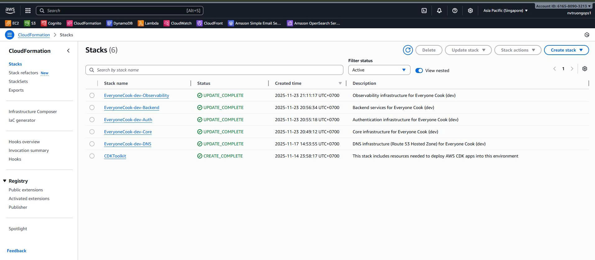
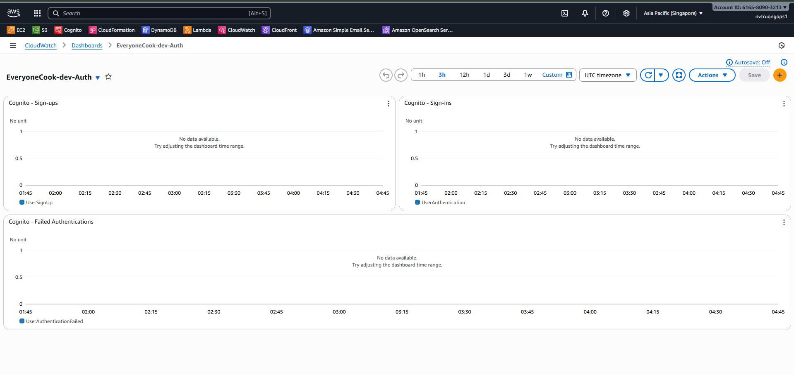

5.4.7 Observability Stack
Observability Stack - Monitoring & Alerting
Overview
The Observability Stack is the Phase 7 monitoring layer of the EveryoneCook infrastructure. It provides comprehensive monitoring, alerting, and visualization for all deployed stacks through CloudWatch dashboards, alarms, and SNS notifications.
Deployment Order: This stack MUST be deployed LAST, after all other stacks (DNS, Certificate, Core, Auth, Backend, Frontend) are deployed.
⚠️ Environment Note: This guide focuses on Development (dev) environment deployment. For staging/production deployments, alarm thresholds and monitoring intervals may be different.
Key Responsibilities
- Create CloudWatch Dashboards for all stack layers
- Configure CloudWatch Alarms for critical metrics
- Setup SNS Topic for alarm notifications
- Create Composite Alarm for overall system health
- Monitor API Gateway, Lambda, DynamoDB, S3, CloudFront, and Cognito
- Track cost and billing metrics
What This Stack Includes
CloudWatch Dashboards (4 dashboards):
- Core Dashboard: DynamoDB, S3, CloudFront metrics
- Auth Dashboard: Cognito authentication metrics
- Backend Dashboard: API Gateway, Lambda, SQS metrics
- Overview Dashboard: Aggregated system health view
CloudWatch Alarms (15+ alarms):
- API Gateway: 5XX errors, 4XX errors, latency
- Lambda: Error rate, throttles, duration
- DynamoDB: Read/write throttles, latency
- S3: 4XX/5XX errors
- SQS: DLQ messages, queue age
- Cost: Daily spending warnings
Notification System:
- SNS Topic for alarm notifications
- Email subscriptions for alerts
- Composite alarm for system health
Architecture
┌──────────────────────────────────────────────────────────────────────┐
│ Observability Stack (Phase 7 - Dev Environment) │
│ │
│ ┌─────────────────────────────────────────────────────────────────┐ │
│ │ SNS Topic (Alarm Notifications) │ │
│ │ ├─ Topic Name: EveryoneCook-dev-Alarms │ │
│ │ ├─ Email Subscription: team@everyonecook.cloud │ │
│ │ └─ Protocol: Email (requires confirmation) │ │
│ └─────────────────────────────────────────────────────────────────┘ │
│ │ │
│ ▼ (Alarm Actions) │
│ ┌─────────────────────────────────────────────────────────────────┐ │
│ │ CloudWatch Alarms (15+ alarms) │ │
│ │ │ │
│ │ API Gateway Alarms: │ │
│ │ ├─ 5XX Error Rate > 5% (Critical) │ │
│ │ ├─ 4XX Error Rate > 20% (Warning) │ │
│ │ └─ P99 Latency > 3s (Warning) │ │
│ │ │ │
│ │ Lambda Alarms: │ │
│ │ ├─ Error Rate > 5% (Critical) │ │
│ │ ├─ Throttles > 10 (Critical) │ │
│ │ └─ P99 Duration > 10s (Warning) │ │
│ │ │ │
│ │ DynamoDB Alarms: │ │
│ │ ├─ Read Throttles > 10 (Critical) │ │
│ │ ├─ Write Throttles > 10 (Critical) │ │
│ │ └─ P99 Latency > 100ms (Warning) │ │
│ │ │ │
│ │ S3 Alarms: │ │
│ │ ├─ 4XX Error Rate > 5% (Warning) │ │
│ │ └─ 5XX Errors > 0 (Critical) │ │
│ │ │ │
│ │ SQS Alarms: │ │
│ │ ├─ DLQ Messages > 0 (Critical) │ │
│ │ └─ Message Age > 5 minutes (Warning) │ │
│ │ │ │
│ │ Cost Alarms: │ │
│ │ ├─ Daily Cost > $50 (Warning) │ │
│ │ └─ Daily Cost > $100 (Critical) │ │
│ └─────────────────────────────────────────────────────────────────┘ │
│ │ │
│ ▼ │
│ ┌─────────────────────────────────────────────────────────────────┐ │
│ │ Composite Alarm (System Health) │ │
│ │ ├─ Name: EveryoneCook-dev-SystemHealth │ │
│ │ ├─ Triggers: ANY critical alarm fires │ │
│ │ └─ Action: Send SNS notification │ │
│ └─────────────────────────────────────────────────────────────────┘ │
│ │
│ ┌─────────────────────────────────────────────────────────────────┐ │
│ │ CloudWatch Dashboards (4 dashboards) │ │
│ │ │ │
│ │ 1. Core Dashboard (EveryoneCook-dev-Core): │ │
│ │ ├─ DynamoDB: Read/Write capacity, throttles, latency │ │
│ │ ├─ S3: Requests, errors, bytes transferred │ │
│ │ └─ CloudFront: Requests, error rates, bytes downloaded │ │
│ │ │ │
│ │ 2. Auth Dashboard (EveryoneCook-dev-Auth): │ │
│ │ ├─ Cognito: Sign-ups, sign-ins │ │
│ │ └─ Cognito: Failed authentications │ │
│ │ │ │
│ │ 3. Backend Dashboard (EveryoneCook-dev-Backend): │ │
│ │ ├─ API Gateway: Requests, latency (P50/P95/P99) │ │
│ │ ├─ API Gateway: 4XX/5XX errors │ │
│ │ ├─ Lambda: Invocations, duration, errors, throttles │ │
│ │ └─ SQS: Messages sent, visible, oldest age │ │
│ │ │ │
│ │ 4. Overview Dashboard (EveryoneCook-dev-Overview): │ │
│ │ ├─ System Health: Environment info, region │ │
│ │ ├─ Key Metrics: API requests, latency, Lambda stats │ │
│ │ ├─ Error Trends: API 5XX, Lambda errors (last hour) │ │
│ │ ├─ Cost Tracking: Estimated daily cost, 7-day trend │ │
│ │ └─ Alarm Status: Composite alarm widget │ │
│ └─────────────────────────────────────────────────────────────────┘ │
└──────────────────────────────────────────────────────────────────────┘
│
│ Monitors
▼
┌──────────────────┴───────────────────┐
▼ ▼ ▼
Core Stack Auth Stack Backend Stack
(DynamoDB, (Cognito) (API Gateway,
S3, CDN) Lambda, SQS)
Stack Configuration
File Structure
infrastructure/lib/stacks/
└── observability-stack.ts # Observability Stack implementation (1175 lines)
Code Implementation Highlights
File: infrastructure/lib/stacks/observability-stack.ts
1. SNS Topic for Alarms
/**
* Create SNS Topic for CloudWatch Alarms
* Task 7.4.2 - Step 1
*/
private createAlarmTopic(): sns.Topic {
const topic = new sns.Topic(this, 'AlarmTopic', {
topicName: `EveryoneCook-${this.config.environment}-Alarms`,
displayName: 'Everyone Cook CloudWatch Alarms',
});
// Add email subscription for alarm notifications
topic.addSubscription(
new sns_subscriptions.EmailSubscription(this.config.contact.email)
);
return topic;
}
Configuration: Email subscription requires confirmation via AWS SNS.
2. API Gateway Alarms
// API Gateway: High 5XX Error Rate (Critical)
const api5xxAlarm = new cloudwatch.Alarm(this, 'API-5XX-Critical', {
alarmName: `EveryoneCook-${this.config.environment}-API-5XX-Critical`,
alarmDescription: 'API Gateway 5XX error rate > 5% in 5 minutes',
metric: new cloudwatch.Metric({
namespace: 'AWS/ApiGateway',
metricName: '5XXError',
dimensionsMap: { ApiName: apiName },
statistic: 'Sum',
period: cdk.Duration.minutes(5),
}),
threshold: 5,
evaluationPeriods: 2,
comparisonOperator: cloudwatch.ComparisonOperator.GREATER_THAN_THRESHOLD,
treatMissingData: cloudwatch.TreatMissingData.NOT_BREACHING,
});
api5xxAlarm.addAlarmAction(alarmAction);
// API Gateway: High Latency (Warning)
const apiLatencyAlarm = new cloudwatch.Alarm(this, 'API-Latency-High', {
alarmName: `EveryoneCook-${this.config.environment}-API-Latency-High`,
alarmDescription: 'API Gateway P99 latency > 3s in 5 minutes',
metric: new cloudwatch.Metric({
namespace: 'AWS/ApiGateway',
metricName: 'Latency',
dimensionsMap: { ApiName: apiName },
statistic: 'p99',
period: cdk.Duration.minutes(5),
}),
threshold: 3000, // 3 seconds in milliseconds
evaluationPeriods: 2,
comparisonOperator: cloudwatch.ComparisonOperator.GREATER_THAN_THRESHOLD,
});
3. Lambda Alarms
// Lambda: High Error Rate (Critical)
const lambdaErrorAlarm = new cloudwatch.Alarm(this, 'Lambda-Error-Rate', {
alarmName: `EveryoneCook-${this.config.environment}-Lambda-Error-Rate`,
alarmDescription: 'Lambda error rate > 5% in 5 minutes',
metric: new cloudwatch.Metric({
namespace: 'AWS/Lambda',
metricName: 'Errors',
statistic: 'Sum',
period: cdk.Duration.minutes(5),
}),
threshold: 5,
evaluationPeriods: 2,
comparisonOperator: cloudwatch.ComparisonOperator.GREATER_THAN_THRESHOLD,
});
// Lambda: Throttles (Critical)
const lambdaThrottleAlarm = new cloudwatch.Alarm(this, 'Lambda-Throttle', {
alarmName: `EveryoneCook-${this.config.environment}-Lambda-Throttle`,
alarmDescription: 'Lambda throttles > 10 in 5 minutes',
metric: new cloudwatch.Metric({
namespace: 'AWS/Lambda',
metricName: 'Throttles',
statistic: 'Sum',
period: cdk.Duration.minutes(5),
}),
threshold: 10,
evaluationPeriods: 1,
});
4. DynamoDB Alarms
// DynamoDB: Read Throttles (Critical)
const dynamoReadThrottleAlarm = new cloudwatch.Alarm(this, 'DynamoDB-Read-Throttle', {
alarmName: `EveryoneCook-${this.config.environment}-DynamoDB-Read-Throttle`,
alarmDescription: 'DynamoDB read throttles > 10 in 5 minutes',
metric: new cloudwatch.Metric({
namespace: 'AWS/DynamoDB',
metricName: 'ReadThrottleEvents',
dimensionsMap: { TableName: dynamoTableName },
statistic: 'Sum',
period: cdk.Duration.minutes(5),
}),
threshold: 10,
evaluationPeriods: 2,
});
// DynamoDB: High Latency (Warning)
const dynamoLatencyAlarm = new cloudwatch.Alarm(this, 'DynamoDB-Latency-High', {
alarmName: `EveryoneCook-${this.config.environment}-DynamoDB-Latency-High`,
alarmDescription: 'DynamoDB P99 latency > 100ms in 5 minutes',
metric: new cloudwatch.Metric({
namespace: 'AWS/DynamoDB',
metricName: 'SuccessfulRequestLatency',
dimensionsMap: {
TableName: dynamoTableName,
Operation: 'Query',
},
statistic: 'p99',
period: cdk.Duration.minutes(5),
}),
threshold: 100, // 100ms
evaluationPeriods: 3,
});
5. Composite Alarm
/**
* Create Composite Alarm for overall system health
* Task 7.4.2 - Step 2
*/
private createCompositeAlarm(alarms: cloudwatch.IAlarm[]): cloudwatch.CompositeAlarm {
// Filter critical alarms only
const criticalAlarms = alarms.filter(
(alarm) => alarm.alarmName.includes('Critical') || alarm.alarmName.includes('Throttle')
);
const compositeAlarm = new cloudwatch.CompositeAlarm(this, 'SystemHealth', {
compositeAlarmName: `EveryoneCook-${this.config.environment}-SystemHealth`,
alarmDescription: 'Overall system health - triggers if any critical alarm fires',
alarmRule: cloudwatch.AlarmRule.anyOf(
...criticalAlarms.map((alarm) =>
cloudwatch.AlarmRule.fromAlarm(alarm, cloudwatch.AlarmState.ALARM)
)
),
});
compositeAlarm.addAlarmAction(new cloudwatch_actions.SnsAction(this.alarmTopic));
return compositeAlarm;
}
6. Core Dashboard
/**
* Create Core Dashboard (DynamoDB, S3, CloudFront)
*/
private createCoreDashboard(props: ObservabilityStackProps): cloudwatch.Dashboard {
const dashboard = new cloudwatch.Dashboard(this, 'CoreDashboard', {
dashboardName: `EveryoneCook-${this.config.environment}-Core`,
});
// DynamoDB Metrics
dashboard.addWidgets(
new cloudwatch.GraphWidget({
title: 'DynamoDB - Read/Write Capacity',
left: [
new cloudwatch.Metric({
namespace: 'AWS/DynamoDB',
metricName: 'ConsumedReadCapacityUnits',
dimensionsMap: { TableName: dynamoTableName },
statistic: 'Sum',
period: cdk.Duration.minutes(5),
}),
new cloudwatch.Metric({
namespace: 'AWS/DynamoDB',
metricName: 'ConsumedWriteCapacityUnits',
dimensionsMap: { TableName: dynamoTableName },
statistic: 'Sum',
period: cdk.Duration.minutes(5),
}),
],
width: 12,
}),
new cloudwatch.GraphWidget({
title: 'DynamoDB - Throttles',
left: [
new cloudwatch.Metric({
namespace: 'AWS/DynamoDB',
metricName: 'ReadThrottleEvents',
dimensionsMap: { TableName: dynamoTableName },
statistic: 'Sum',
period: cdk.Duration.minutes(5),
}),
new cloudwatch.Metric({
namespace: 'AWS/DynamoDB',
metricName: 'WriteThrottleEvents',
dimensionsMap: { TableName: dynamoTableName },
statistic: 'Sum',
period: cdk.Duration.minutes(5),
}),
],
width: 12,
})
);
// S3 and CloudFront metrics...
return dashboard;
}
7. Overview Dashboard
/**
* Create Overview Dashboard (Aggregated view)
*/
private createOverviewDashboard(props: ObservabilityStackProps): cloudwatch.Dashboard {
const dashboard = new cloudwatch.Dashboard(this, 'OverviewDashboard', {
dashboardName: `EveryoneCook-${this.config.environment}-Overview`,
});
// System Health Header
dashboard.addWidgets(
new cloudwatch.TextWidget({
markdown: `# Everyone Cook - System Overview\n\n**Environment:** ${this.config.environment}\n\n**Region:** ${this.region}`,
width: 24,
height: 2,
})
);
// Key Metrics: API, Lambda, DynamoDB, S3
// Cost Tracking
// Alarm Status Widget
return dashboard;
}
Deployment Guide
Prerequisites
Before deploying the Observability Stack, ensure:
-
All other stacks deployed:
- DNS Stack (Phase 1)
- Certificate Stack (Phase 1.5)
- Core Stack (Phase 2)
- Auth Stack (Phase 3)
- Backend Stack (Phase 4)
- Frontend Stack (Phase 6 - Amplify)
-
Stack exports available:
aws cloudformation list-exports --region ap-southeast-1Expected exports:
EveryoneCook-dev-Core-TableNameEveryoneCook-dev-Core-ContentBucketNameEveryoneCook-dev-Core-DistributionIdEveryoneCook-dev-Auth-UserPoolIdEveryoneCook-dev-Backend-ApiName
-
Email configured:
- Valid email in
infrastructure/config/dev.ts - Email will receive SNS subscription confirmation
- Valid email in
Step 1: Review Configuration
File: infrastructure/config/dev.ts
export const devConfig: EnvironmentConfig = {
environment: 'dev',
region: 'ap-southeast-1',
// Email for alarm notifications
contact: {
email: 'your-email@example.com', // ⚠️ Update this
phone: '+1234567890',
},
// Monitoring settings (already configured)
monitoring: {
enableDetailedMonitoring: true,
retainLogs: true,
logRetentionDays: 7,
enableXRay: false, // Disabled for dev to save costs
},
};
⚠️ Important: Update the email address to receive alarm notifications.
Step 2: Synthesize CloudFormation Template
Navigate to infrastructure directory:
cd D:\Project_AWS\everyonecook\infrastructure
Synthesize the Observability Stack:
npm run synth
Expected Output (1175 lines):
✨ Synthesis time: 3.5s
Resources:
[+] AWS::SNS::Topic AlarmTopic
[+] AWS::SNS::Subscription AlarmTopic/EmailSubscription
[+] AWS::CloudWatch::Alarm API-5XX-Critical
[+] AWS::CloudWatch::Alarm API-4XX-Warning
[+] AWS::CloudWatch::Alarm API-Latency-High
[+] AWS::CloudWatch::Alarm Lambda-Error-Rate
[+] AWS::CloudWatch::Alarm Lambda-Throttle
[+] AWS::CloudWatch::Alarm Lambda-Duration-High
[+] AWS::CloudWatch::Alarm DynamoDB-Read-Throttle
[+] AWS::CloudWatch::Alarm DynamoDB-Write-Throttle
[+] AWS::CloudWatch::Alarm DynamoDB-Latency-High
[+] AWS::CloudWatch::Alarm S3-4XX-Warning
[+] AWS::CloudWatch::Alarm S3-5XX-Critical
[+] AWS::CloudWatch::Alarm SQS-DLQ-Messages
[+] AWS::CloudWatch::Alarm SQS-Queue-Age
[+] AWS::CloudWatch::Alarm Cost-Warning
[+] AWS::CloudWatch::Alarm Cost-Critical
[+] AWS::CloudWatch::CompositeAlarm SystemHealth
[+] AWS::CloudWatch::Dashboard CoreDashboard
[+] AWS::CloudWatch::Dashboard AuthDashboard
[+] AWS::CloudWatch::Dashboard BackendDashboard
[+] AWS::CloudWatch::Dashboard OverviewDashboard
Outputs:
- AlarmTopicArn
- CompositeAlarmName
- CoreDashboardName
- AuthDashboardName
- BackendDashboardName
- OverviewDashboardName
 Screenshot: CDK synth output showing all Observability Stack resources
Screenshot: CDK synth output showing all Observability Stack resources
Step 3: Review Generated Template
Open the generated CloudFormation template:
code infrastructure/cdk.out/EveryoneCook-dev-Observability.template.json
 Screenshot: Generated CloudFormation template showing SNS Topic, 15+ Alarms, Composite Alarm, and 4 Dashboards
Screenshot: Generated CloudFormation template showing SNS Topic, 15+ Alarms, Composite Alarm, and 4 Dashboards
Step 4: Deploy Observability Stack
Deploy using CDK:
npx cdk deploy EveryoneCook-dev-Observability --require-approval never
Expected Deployment Time: 2-3 minutes
Deployment Output:
EveryoneCook-dev-Observability: deploying...
EveryoneCook-dev-Observability: creating CloudFormation changeset...
EveryoneCook-dev-Observability
Outputs:
EveryoneCook-dev-Observability.AlarmTopicArn = arn:aws:sns:ap-southeast-1:123456789012:EveryoneCook-dev-Alarms
EveryoneCook-dev-Observability.CompositeAlarmName = EveryoneCook-dev-SystemHealth
EveryoneCook-dev-Observability.CoreDashboardName = EveryoneCook-dev-Core
EveryoneCook-dev-Observability.AuthDashboardName = EveryoneCook-dev-Auth
EveryoneCook-dev-Observability.BackendDashboardName = EveryoneCook-dev-Backend
EveryoneCook-dev-Observability.OverviewDashboardName = EveryoneCook-dev-Overview
Stack ARN:
arn:aws:cloudformation:ap-southeast-1:123456789012:stack/EveryoneCook-dev-Observability/...
✨ Deployment time: 2m 15s
Verification
Step 1: Verify CloudFormation Stack
Navigate to CloudFormation Console:
AWS Console → CloudFormation → Stacks
Verify Stack:
- Stack Name:
EveryoneCook-dev-Observability - Status: CREATE_COMPLETE ✅
- Resources: 24 resources created
 Screenshot: CloudFormation stack with CREATE_COMPLETE status and 24 resources
 Screenshot: CloudFormation Outputs tab showing all 6 outputs
Screenshot: CloudFormation Outputs tab showing all 6 outputs
Step 2: Verify CloudWatch Alarms
Navigate to CloudWatch Console → Alarms:
AWS Console → CloudWatch → All alarms
Verify Alarms Created (15+ alarms):
| Alarm Name | Type | Metric | Threshold | Status |
|---|---|---|---|---|
EveryoneCook-dev-API-5XX-Critical |
Critical | API 5XX Errors | > 5 | OK |
EveryoneCook-dev-API-4XX-Warning |
Warning | API 4XX Errors | > 20 | OK |
EveryoneCook-dev-API-Latency-High |
Warning | API P99 Latency | > 3000ms | OK |
EveryoneCook-dev-Lambda-Error-Rate |
Critical | Lambda Errors | > 5 | OK |
EveryoneCook-dev-Lambda-Throttle |
Critical | Lambda Throttles | > 10 | OK |
EveryoneCook-dev-Lambda-Duration-High |
Warning | Lambda P99 Duration | > 10000ms | OK |
EveryoneCook-dev-DynamoDB-Read-Throttle |
Critical | DynamoDB Read Throttles | > 10 | OK |
EveryoneCook-dev-DynamoDB-Write-Throttle |
Critical | DynamoDB Write Throttles | > 10 | OK |
EveryoneCook-dev-DynamoDB-Latency-High |
Warning | DynamoDB P99 Latency | > 100ms | OK |
EveryoneCook-dev-S3-4XX-Warning |
Warning | S3 4XX Errors | > 5% | OK |
EveryoneCook-dev-S3-5XX-Critical |
Critical | S3 5XX Errors | > 0 | OK |
EveryoneCook-dev-SQS-DLQ-Messages |
Critical | SQS DLQ Messages | > 0 | OK |
EveryoneCook-dev-SQS-Queue-Age |
Warning | SQS Message Age | > 300s | OK |
EveryoneCook-dev-Cost-Warning |
Warning | Daily Cost | > $50 | OK |
EveryoneCook-dev-Cost-Critical |
Critical | Daily Cost | > $100 | OK |
Verify Composite Alarm:
- Name:
EveryoneCook-dev-SystemHealth - Type: Composite
- Rule: ANY critical alarm → ALARM
- Status: OK ✅
 Screenshot: CloudWatch Alarms console showing all 15+ alarms with OK status
Screenshot: CloudWatch Alarms console showing all 15+ alarms with OK status
 Screenshot: Composite alarm details for system health monitoring
Screenshot: Composite alarm details for system health monitoring
Step 3: Verify CloudWatch Dashboards
Navigate to CloudWatch Console → Dashboards:
AWS Console → CloudWatch → Dashboards
Verify Dashboards Created (5 dashboards):
1. Core Dashboard (EveryoneCook-dev-Core)
Open the dashboard and verify widgets:
DynamoDB Widgets:
- Read/Write Capacity graph
- Throttles graph
- Latency (P99) graph
- Table Size metric
S3 Widgets:
- Requests graph
- Errors (4XX/5XX) graph
CloudFront Widgets:
- Requests graph
- Error Rate (4XX/5XX) graph
- Bytes Downloaded graph
 Screenshot: Core Dashboard showing DynamoDB, S3, and CloudFront metrics
Screenshot: Core Dashboard showing DynamoDB, S3, and CloudFront metrics
2. Auth Dashboard (EveryoneCook-dev-Auth)
Cognito Widgets:
- Sign-ups graph
- Sign-ins graph
- Failed Authentications graph
 Screenshot: Auth Dashboard showing Cognito authentication metrics
3. Backend Dashboard (EveryoneCook-dev-Backend)
API Gateway Widgets:
- Requests graph
- Latency (P50/P95/P99) graph
- 4XX Errors graph
- 5XX Errors graph
Lambda Widgets:
- Invocations graph
- Duration (P99) graph
- Errors graph
- Throttles graph
SQS Widgets:
- Messages Sent graph
- Messages Visible graph
- Oldest Message Age graph
 Screenshot: Backend Dashboard showing API Gateway, Lambda, and SQS metrics
Screenshot: Backend Dashboard showing API Gateway, Lambda, and SQS metrics
4. Overview Dashboard (EveryoneCook-dev-Overview)
System Health Section:
- Header with environment info
- Region information
Key Metrics:
- API Requests (5m) - Single value widget
- API P99 Latency - Single value widget
- Lambda Invocations (5m) - Single value widget
- Lambda Errors (5m) - Single value widget
- DynamoDB Read/Write Throttles - Single value widgets
- S3 Requests and Errors - Single value widgets
Trends:
- Error Rates graph (API 5XX, Lambda Errors)
Cost Tracking:
- Estimated Daily Cost - Single value widget
- Cost Trend (7 days) - Graph widget
Alarm Status:
- Composite Alarm widget showing system health
 Screenshot: Overview Dashboard with system health, key metrics, error trends, and cost tracking
Screenshot: Overview Dashboard with system health, key metrics, error trends, and cost tracking
Cost Breakdown
Monthly Costs (Development)
| Service | Resource | Quantity | Unit Cost | Total |
|---|---|---|---|---|
| CloudWatch Alarms | Standard alarms | 15 | $0.10/alarm | $1.50 |
| CloudWatch Alarms | Composite alarm | 1 | $0.50/alarm | $0.50 |
| CloudWatch Dashboards | Dashboards (>3) | 1 | $3.00/dashboard | $3.00 |
| CloudWatch Metrics | Standard resolution | Included | Free | $0.00 |
| SNS | Email notifications | <1000 | Free tier | $0.00 |
| CloudWatch Logs | 7-day retention | ~5 GB | $0.50/GB | $2.50 |
| Total | $7.50/month |
Free Tier Benefits:
- First 3 dashboards: Free
- First 10 alarms: Free (covered)
- First 1M API requests to CloudWatch: Free
- SNS email (first 1000): Free
Next Steps
After deploying the Observability Stack:
-
Confirm Email Subscription: Check inbox and confirm SNS subscription
-
Review Dashboards: Familiarize yourself with all 4 dashboards
-
Test Alarms: Trigger a test alarm to verify notifications
-
Monitor Costs: Check daily cost tracking in Overview Dashboard
-
⏭️ Deploy Frontend: Continue to 5.10 Deploy to Amplify
-
⏭️ Test End-to-End: Test complete application flow and monitor metrics
-
📊 Review Metrics: After 24 hours, review all dashboards for baseline metrics
Summary
You have successfully deployed the Observability Stack with:
1 SNS Topic for alarm notifications
15+ CloudWatch Alarms for critical metrics
1 Composite Alarm for overall system health
4 CloudWatch Dashboards for monitoring
Email Notifications configured and confirmed
Key Achievements:
- Complete visibility into system health
- Proactive alerting for critical issues
- Cost tracking and optimization
- Centralized monitoring dashboards
Total Resources: 24 CloudFormation resources
Deployment Time: ~2-3 minutes
Monthly Cost: ~$7.50 (dev environment)
🎉 Congratulations! You have completed all infrastructure stack deployments. Your EveryoneCook platform now has comprehensive monitoring and observability.
Next: 5.10 Deploy to Amplify to deploy the Next.js frontend application.